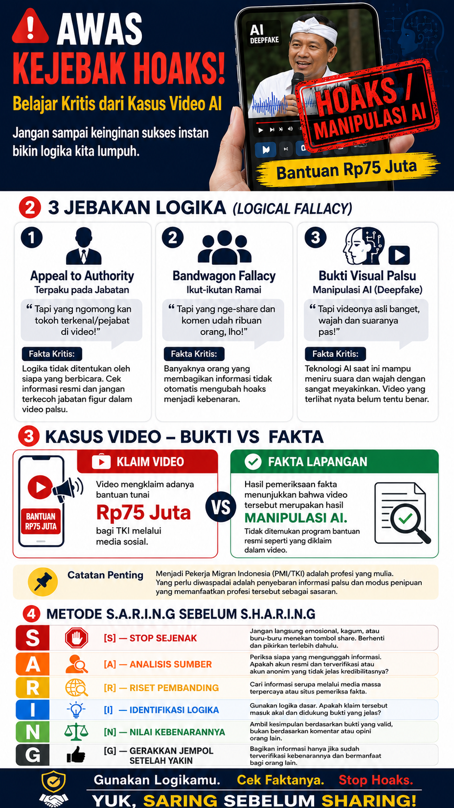

Begini bentuk hoaks yang menjadi titik berangkat proyek ini.
"Desta Mau Jadi TKI Gara-Gara Video AI"
Video pendek berdurasi ±3 menit ini membawakan ulang kasus hoaks nyata yang sempat viral, yaitu berita mengenai klaim bantuan Rp75 juta bagi TKI yang diatasnamakan seorang pejabat publik, lengkap dengan video hasil manipulasi AI. Lewat obrolan santai enam mahasiswa di kampus, video ini membedah dua kesesatan berpikir paling umum dan memperkenalkan metode SARING sebagai alat verifikasi praktis.

Latar Belakang Isu & Masalah
Mengapa misinformasi menjadi persoalan nyata bagi mahasiswa
Di era digital, arus informasi mengalir lebih cepat daripada kemampuan kita untuk memverifikasinya. Hasil riset yang kami lakukan terhadap dosen dan mahasiswa aktif Matana University menunjukkan gambaran yang cukup mengkhawatirkan. Sebagian besar mahasiswa mengaku sangat sering memperoleh berita dan informasi dari media sosial, dengan Instagram dan TikTok sebagai platform yang paling banyak diakses. Namun, karena kecepatan akses ini tidak diimbangi pemahaman yang memadai, mayoritas responden mengaku masih kurang paham terhadap istilah "misinformasi" itu sendiri. Juga, hampir semua mahasiswa pernah menemukan berita palsu atau menyesatkan di media sosial, paling sering dikenali lewat judul yang clickbait dan provokatif serta ketiadaan sumber yang jelas.
Menurut para dosen yang kami wawancarai, terdapat beberapa akar masalah yang cukup spesifik. Mayoritas dari mereka menilai bahwa kelemahan utama mahasiswa bukan soal akses terhadap informasi yang benar, melainkan kebiasaan untuk tidak melakukan pengecekan fakta sebelum mempercayai atau menyebarkan suatu konten. Persoalan ini menjadi sangat nyata ketika kami menemukan kasus viral mengenai klaim bantuan Rp75 juta untuk Tenaga Kerja Indonesia (TKI) yang diatasnamakan seorang pejabat publik. Setelah ditelusuri, klaim tersebut terbukti hoaks dan tidak ada satu pun pengumuman resmi yang mendukungnya, serta video yang beredar merupakan hasil manipulasi kecerdasan buatan (AI). Kasus inilah yang kemudian kami angkat menjadi studi kasus utama dalam video edukasi yang kami produksi, karena merepresentasikan persis pola misinformasi yang paling sering ditemui mahasiswa, yaitu tampilan yang meyakinkan, klaim yang menggiurkan dan kecepatan penyebaran yang jauh mendahului proses verifikasi.
Urgensi Berpikir Kritis
Ketaksaan, asumsi tersembunyi, & kesesatan berpikir.
Kasus hoaks Rp75 juta yang kami angkat memperlihatkan dengan jelas bagaimana ambiguitas (ambiguity) dapat dimanfaatkan untuk menyesatkan seseorang. Sebuah video yang menampilkan sosok pejabat "berbicara langsung" tampak meyakinkan secara visual, padahal teknologi AI generatif kini mampu merekonstruksi wajah dan suara seseorang nyaris sempurna. Batas antara "terlihat asli" dan "benar-benar asli" menjadi kabur, dan disinilah banyak orang-orang termasuk mahasiswa bisa saja gagal dalam membedakan keduanya. Di balik kekaburan ini, tersembunyi sejumlah asumsi yang jarang dipertanyakan: asumsi bahwa video selalu merekam kenyataan apa adanya, asumsi bahwa unggahan yang viral pasti sudah diperiksa kebenarannya oleh orang lain, dan asumsi bahwa seseorang yang menyandang jabatan tertentu tidak mungkin disalahgunakan citranya. Kegagalan dalam membongkar asumsi-asumsi dasar inilah yang menciptakan celah besar bagi misinformasi untuk tersebar
Untuk membongkar jebakan ambiguitas dan asumi tersebut, proyek ini secara spesifik menargetkan dua kesesatan berpikir (logical fallacy) yang paling dominan dan berbahaya dalam pola pikir mahasiswa, yaitu Appeal to Authority dan Bandwagon Fallacy. Kedua hal ini sering kali membuat berita palsu terasa sangat masuk akal, apalagi jika ditambah judul yang memancing (clickbait) dan tanpa sumber yang jelas. Video dan infografis yang kami rancang berfungsi untuk memvisualisasikan mengapa kedua kesalahan logika ini terasa sangat rasional di mata pengguna media sosial dan melatih mahasiswa agar tidak mudah terjebak hoaks. Urgensi dari proyek ini adalah mengubah metode SARING dari sekadar konsep teoritis menjadi sebuah kebiasaan otomatis. Lewat konten visual ini, kami ingin membiasakan audiens untuk berhenti sejenak, tidak langsung percaya pada video atau gambar yang kelihatan asli dan berani mengecek faktanya terlebih dahulu sebelum ikut menyebarkan hoaks ke orang lain.
Appeal to Authority
Percaya hanya karena yang bicara adalah pejabat atau figur berwenang, tanpa memverifikasi isi klaimnya.
Bandwagon Fallacy
Menganggap sesuatu pasti benar karena sudah dibagikan dan dipercaya banyak orang.
Bukti ≠ Fakta
Menyamakan video atau gambar yang "terlihat asli" dengan sesuatu yang sudah pasti terbukti benar.
Rencana Aksi & Pengembangan Diri
Metode SARING — kerangka verifikasi enam langkah dari video edukasi kami
🌱 Keberlanjutan Proyek
Untuk keberlanjutan proyek ini, kami merancang metode SARING sebagai kerangka praktis yang mudah diingat dan diterapkan mahasiswa dalam keseharian bermedia sosial. Sejalan dengan preferensi mayoritas mahasiswa terhadap format video pendek berdurasi 1–3 menit dengan gaya penyampaian santai, rencana ke depan adalah mengembangkan rangkaian konten serupa dengan studi kasus nyata lain yang sedang viral. Konten didistribusikan secara konsisten melalui dua platform yang paling banyak digunakan mahasiswa untuk mengakses informasi, yaitu Instagram dan TikTok. Kami juga berencana melengkapi video dengan infografis ringkas berisi ringkasan metode SARING, sehingga audiens yang lebih menyukai format visual statis tetap dapat terbantu.
🚀 Pengembangan Diri
Bagi pengembangan diri saya pribadi, proyek ini menjadi titik awal untuk membiasakan SARING bukan hanya sebagai materi yang diajarkan ke orang lain, tetapi sebagai kebiasaan pribadi sebelum membagikan apa pun di media sosial. Saya berkomitmen untuk terus mempertajam kemampuan saya dalam menelusuri sumber terpecaya, memanfaatkan berbagai platform untuk mengecek fakta dari suatu berita, dan secara sadar menahan diri dari dorongan untuk langsung percaya pada informasi yang terasa emosional atau menggiurkan. Ke depan, saya juga ingin memperdalam pemahaman tentang cara kerja AI generatif, mengingat teknologi inilah yang kini menjadi alat utama di balik banyak hoaks visual yang beredar.
Stop Sejenak
Jangan langsung percaya — beri jeda sebelum bereaksi atau membagikan.Analisis Sumber
Cek siapa yang mengunggah pertama kali dan rekam jejaknya.Riset Pembanding
Cari beritanya di media terpercaya — adakah yang melaporkan hal sama?Identifikasi Logika
Masuk akal atau tidak? Apakah klaimnya realistis?Nilai Kebenarannya
Adakah bukti resmi, atau hanya sekadar "katanya"?Gerakkan Jempol Setelah Yakin
Baru bagikan kalau sudah benar-benar terverifikasi.Evaluasi Diri
Perubahan kognitif, emosional, dan nilai setelah menjalani proyek ini
🧠 Perubahan Kognitif
Secara kognitif, proyek ini mengubah cara saya memproses informasi yang saya temui sehari-hari. Sebelumnya, saya cenderung menilai suatu konten dari kesan pertama, seperti siapa yang membagikannya, seberapa meyakinkan tampilannya, atau seberapa banyak orang yang sudah berinteraksi dengannya. Setelah menyusun riset video dan infografis ini, saya menjadi lebih sadar bahwa kesan pertama semacam itu justru rentan dimanipulasi. Sekarang, saya secara refleks bertanya "dari mana sumber informasi ini?" sebelum mempercayai sebuah informasi. Kemampuan mengenali pola kesesatan berpikir seperti appeal to authority dan bandwagon fallacy juga membuat saya lebih jeli melihat celah argumen, baik dalam konten yang saya konsumsi maupun dalam diskusi sehari-hari.
❤️⚖️ Perubahan Emosional & Nilai
Secara emosional, saya menyadari bahwa godaan untuk langsung percaya pada informasi yang menggiurkan sering kali muncul karena ada suatu harapan atau kebutuhan yang ingin segera terpenuhi. Memahami hal ini membuat saya lebih sabar dan tidak terburu-buru bereaksi, sekaligus lebih berempati pada orang-orang yang menjadi korban hoaks, alih-alih menghakimi mereka sebagai "mudah tertipu". Dari sisi nilai, proyek ini menanamkan keyakinan bahwa memverifikasi sebelum membagikan bukan sekadar kewajiban akademis, melainkan bentuk tanggung jawab sosial. Karena setiap informasi yang saya bagikan berpotensi memengaruhi keputusan orang lain.
Sebelum Proyek
- Menilai kebenaran dari tampilan & jumlah share
- Mudah percaya pada figur berwenang tanpa cek ulang
- Cepat bereaksi pada info yang menggiurkan
Setelah Proyek
- Mengecek sumber & membandingkan media lain
- Mempertanyakan klaim, sekuat apa pun otoritasnya
- Menjalankan SARING sebelum membagikan apa pun
A. Aku Berpikir Kritis, maka Aku ...
Aku Berpikir Kritis, maka aku akan cenderung mengambil keputusan berdasarkan bukti dan penjelasan yang dapat dipertanggungjawabkan. Bukan sekadar dugaan, tekanan emosional, atau desakan dari lingkungan.
B. Apa kompetensi dan nilai 'Aku'?
Kompetensi yang ingin saya perkuat meliputi kemampuan menelaah sumber, mengevaluasi kebenaran suatu informasi, mengenali cacat logika, dan merumuskan kesimpulan yang didukung bukti yang valid.
C. Apa manfaat bagi 'Aku'?
Dengan keterampilan ini saya jadi lebih selektif menerima informasi, tidak mudah terpengaruhi hoaks, dan mampu membuat pilihan yang lebih masuk akal. Terutama dalam bidang akademik, maupun keputusan sehari-hari.
D. Kenapa penting buat 'Aku'?
Di zaman informasi yang serba cepat, kemampuan menilai sendiri kebenaran menjadi penting agar saya tidak mudah termanipulasi. Berpikir kritis memberi saya kebebasan untuk memahami isu secara mandiri dan menjaga penyebaran informasi palsu.
E. Apa hambatan bagi 'Aku'?
Hambatan utama adalah kecenderungan menerima informasi yang tampak meyakinkan atau populer tanpa pemeriksaan lebih jauh, serta keterbatasan waktu untuk menelusuri bukti. Oleh karena itu, saya berusaha membiasakan langkah verifikasi sederhana sebelum mengambil keputusan atau berbagi konten.
F. Aku adalah aku, tapi siapa 'Aku'?
Saya adalah seorang mahasiswa yang sedang membangun kebiasaan berpikir rasional. Seperti terus belajar, terbuka pada fakta, dan bertanggung jawab atas dampak informasi yang saya terima maupun sebarkan kepada orang lain.